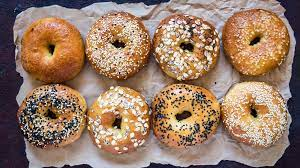

Bagels
Description:
This is a delicious and easy recipe for bagels that I've made time and time again. Nothing beats one of these bad boys fresh out of the oven and slathered in cream cheese.
This recipe is for just plain bagels, but it's easy to adapt it for other flavors and toppings. Have fun!
Makes: About 8 bagels.
Ingredients:
- 2 tsp yeast
- 4 tsp sugar
- 1 cup lukewarm water (not too hot)
- 3.5 cups flour (bread/high gluten is best)
- 1.5 tsp salt
- pinch baking soda
- 1 egg for wash
Directions:
- Sprinkle yeast and sugar in 1/2 cup warm water and let sit for 5 minutes.
- Mix flour and salt together.
- Add yeast mixture to flour mixture. Mix until stiff dough forms. If needed, add more warm water to achieve a bread dough-like consistency.
- Let rise 1 hour or until double in size. Punch down and let rest 10 minutes.
- Divide dough into 8 balls of equal size. Shape into bagels and set to rest 10 more minutes.
- Boil water with a little baking soda.
- When water is boiling, add bagels and boil for 1 minute each or up to 2 minutes max.
- Mix egg with a little water and whisk to create a wash. Brush over boiled bagels. If desired, add sesame seeds, poppy seeds, or other desired topping here.
- Bake bagels at 425 degrees Fahrenheit for 20 to 25 minutes.
- Let cool slightly and eat.
- Store bagels in airtight bag or sealed container, after they have completely cooled.